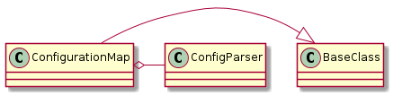

The Configuration Map maps a configuration-file-name to data. It extends the ConfigParser to have more data-types (and allow missing values) and to add sub-configuration-files (see the ConfigParser Explorations to get some idea of what I am getting at).
The ConfigParser module along with the glob module will be used to find and convert files to data. The ConfigParser has methods for the main singular data-types but I will also add collections and times. Additionally I will automatically add any sub-config files matching a config_glob found in the DEFAULT section of the main file given. I am also setting the allow_no_value option to True so that you can use options without values:
[SECTION]
option = value
valueless_option

The ConfigurationMap will raise a ConfigurationError to try and trickle up more useful information.
ConfigurationError |
ConfigurationMap |
|
ConfigurationMap.get |
|
ConfigurationMap.get_type |
|
ConfigurationMap.get_int |
|
ConfigurationMap.get_float |
|
ConfigurationMap.get_boolean |
|
ConfigurationMap.get_list |
|
ConfigurationMap.get_tuple |
|
ConfigurationMap.get_dictionary |
|
ConfigurationMap.get_ordered_dictionary |
|
ConfigurationMap.get_named_tuple |
|
ConfigurationMap.get_relativetime |
|
ConfigurationMap.get_datetime |
|
ConfigurationMap.sections |
|
ConfigurationMap.has_option |
|
ConfigurationMap.options |
|
ConfigurationMap.items |
|
ConfigurationMap.defaults |
|
ConfigurationMap.write |
Note
get_relativetime and get_absolutetime are currently using the defaults. If more control is needed, you will need to grab the option and build them yourself.
This property is a SafeConfigParser instance. When it is created, the ConfigurationMap reads the filename passed in on instantiation and checks if the loaded configuration has a [DEFAULT] : config_glob option. If it does, it gets the config_glob value, traverses the expanded glob and loads all the files that match.
These are the ConfigParser methods that will be used.
SafeConfigParser([defaults, dict_type, ...]) |
|
SafeConfigParser.options(section) |
Return a list of option names for the given section name. |
SafeConfigParser.sections() |
Return a list of section names, excluding [DEFAULT] |
SafeConfigParser.items(section[, raw, vars]) |
Return a list of tuples with (name, value) for each option in the section. |
SafeConfigParser.read(filenames) |
Read and parse a filename or a list of filenames. |
SafeConfigParser.write(fp) |
Write an .ini-format representation of the configuration state. |
SafeConfigParser.get(section, option[, raw, ...]) |
Get an option value for a given section. |
SafeConfigParser.getint(section, option) |
|
SafeConfigParser.getfloat(section, option) |
|
SafeConfigParser.getboolean(section, option) |
|
SafeConfigParser.has_option(section, option) |
Check for the existence of a given option in a given section. |
SafeConfigParser.has_section(section) |
Indicate whether the named section is present in the configuration. |
These are the ConfigParser Exceptions that I will handle in the ConfigurationMap.
ConfigParser.Error([msg]) |
Base class for ConfigParser exceptions. |
ConfigParser.NoSectionError(section) |
Raised when no section matches a requested option. |
ConfigParser.NoOptionError(option, section) |
A requested option was not found. |